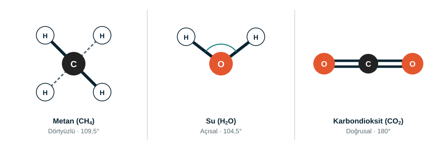

Bölüm 3 · Şekil
Moleküller neden farklı şekillere sahip?
Bir atomun etrafındaki elektron çiftleri birbirini iter. Bu itme, molekülün üç boyutlu şeklini ve bağ açılarını belirler.

| Molekül | Formül | Merkez atom | Şekil | Bağ açısı |
|---|---|---|---|---|
| Metan | CH4 | C | Dörtyüzlü | 109,5° |
| Su | H2O | O | Açısal (bükük) | 104,5° |
| Karbondioksit | CO2 | C | Doğrusal | 180° |
Neden su 109,5° değil de 104,5°? Oksijen üzerinde bağ yapmayan 2 elektron çifti bulunur. Bu çiftler, bağ yapan çiftlerden daha fazla yer kaplayarak H–O–H açısını daraltır.
Model yaparken
Atomları toplarla, bağları çubuklarla gösterebilirsiniz. Kesikli çizgi, bağın sayfanın arkasına gittiğini anlatır; böylece moleküllerin üç boyutlu şeklini iki boyutlu bir kâğıtta da gösterebilirsiniz.
Sınıfta deneyin
1. Metan
Dört bağı dörtyüzlü olacak şekilde kurun ve açıyı ölçün. Beklenen değer yaklaşık 109,5°.
2. Su
H–O–H açısını ölçün. Gerçek değer yaklaşık 104,5° olup metandan biraz küçüktür.
3. CO2
Üç atomu düz bir çizgi üzerinde dizin. Bağ açısı 180° olmalıdır.